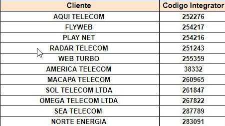

Clientes - AMS
Voltar
Cliente
ONTUSER
SUGAR2A041
ONTUSER
Ve0lx31GioLg
ONTUSER
OmPsJDY6CzGS
INSTAÇÃO E OUTROS
LINK INSTALAÇÃO
CIRCUITO DOWN
COMANDOS E RESET'S
CONFIGURAÇÃO RESET
CIRCUITO DOWN
SCRIPT RÁPIDO
resevado
resevado
CONTATOS CLIENTES SPI

Aplicado reset geral via Cut Through (AMS) - Aguardar autenticação no PPPoE e prosseguir análise.
Em verificação cliente conectado após reset geral via Cut Through (AMS). Encaminhado sms informando.